Vivo survoje · 1912–1988
Tibor
Sekelj
Homo, kiun pelis scivolemo – esploristo, verkisto, vojaĝanto kaj esperantisto.
Rimarko de la prelegonto
De la datreveno al la hodiaŭa elekto
La unuan prezenton pri Tibor Sekelj mi preparis antaŭ 14 jaroj, je la 100-a datreveno de lia naskiĝo. Tiu prezento servis kiel bazo, tamen mi ĝin grandparte ŝanĝis.
Tiom da diversaj flankoj de unu vivo
La vivo de Sekelj estis tiel riĉa, ke oni povus prepari multajn memstarajn prezentojn – interalie pri li kiel:
geografo, ĵurnalisto, filmisto, alpinisto, etnologo, aventuristo, politika aktivulo, poliglotulo, esperantisto, edukisto, artisto, verkisto kaj ankoraŭ aliaj.
Hodiaŭ mi elstarigos nur kelkajn el tiuj flankoj – laŭ propra elekto.
Kiu li estis?
Pli ol vojaĝanto
Tibor Sekelj (1912–1988) estis ĵurnalisto, esploristo, etnografo, verkisto, muzeisto kaj unu el la plej eminentaj esperantistoj de sia tempo.
Lian vivon markis konstantaj translokiĝoj kaj esplorado jam de frua infanaĝo, kio formis lin kiel mondcivitanon kaj poliglotulon.
Sekelj en kvar vivperiodoj
Junaĝo kaj radikoj
La patro bestkuracisto kaj la unuaj dek jaroj en Cenei
La patro de Tibor Sekelj estis bestkuracisto, la familio ofte translokiĝis.
Translokiĝo al Cenei
Nur kelkajn monatojn post la naskiĝo de Tibor la familio ekloĝis en la urbo Cenei en la nuna Rumanio, kie Tibor vivis dum la unuaj dek jaroj de sia vivo.
Lingva medio
La hejma lingvo estis la hungara, sur la strato oni parolis ankaŭ germanan dialekton.
Lernejaj jaroj kaj kreskado
De Kikinda kaj Nikšić ĝis Zagrebo
Kikinda (1922)
La familio translokiĝis en 1922 al Kikinda (Кикинда), Serbio, Jugoslavio, kie Tibor lernis la serbokroatan; tiam li lernis ankaŭ la francan kaj eĉ instruis siajn samaĝulojn, estante nur kelkajn lecionojn antaŭ ili. Tiun lingvon li perfektigis ĉe franca instruistino; ekde tiam li lernis novan lingvon proksimume ĉiun kvaran jaron. En Kikinda li finis la bazlernejon.
Nikšić (1926) kaj Zagrebo (1929–1939)
La familio en 1926 translokiĝis al Nikšić (Никшић), Montenegro, kie li finis la gimnazion. Jam en la mezlernejo li ekamis montgrimpadon kaj piede trairis la tutan Montenegron. En 1929 li enskribiĝis en la universitaton por studi juron en Zagrebo (Kroatio), kie en 1933 li diplomiĝis kiel unu el la tri plej junaj studentoj. En tiuj jaroj li lernis ankaŭ pentradon, skulptadon kaj ĵurnalistan laboron, per kiu li komencis vivteni sin. Interalie li lernis la internacian lingvon Esperanto. En 1937 li komencis labori en Zagrebo kiel filmdramaturgo.
Mapo kaj jaroj
Loĝlokoj
Superrigardo de la lokoj, kie Tibor Sekelj vivis, lernis aŭ agadis inter 1912 kaj 1988.
Naskiĝo kaj fruaj jaroj
Spišská Sobota (1912) kaj Cenei (1912–1922) kaj lernado en Kikinda (1922–1926), Nikšić (1926–1929) kaj Zagrebo (1929–1939).
Pli postaj periodoj
Post la reveno el Sudameriko loĝado en Beogrado (1954–1972) kaj Subotico (1972–1988).
Komenco de la vojo
1939: foriro al Argentino
Al Bonaero li iris kiel ĵurnalisto. Tie li restis proksimume dek kvin jarojn – kaj lia vivo fariĝis serio de ekspedicioj, esploroj kaj libroj.
1939
Bonaero
Ĵurnalista laboro kaj studado de etnologio kaj arkeologio.
~15
Jaroj en Sudameriko
Vojaĝoj tra Argentino, Brazilo, Bolivio kaj aliaj landoj de la kontinento.
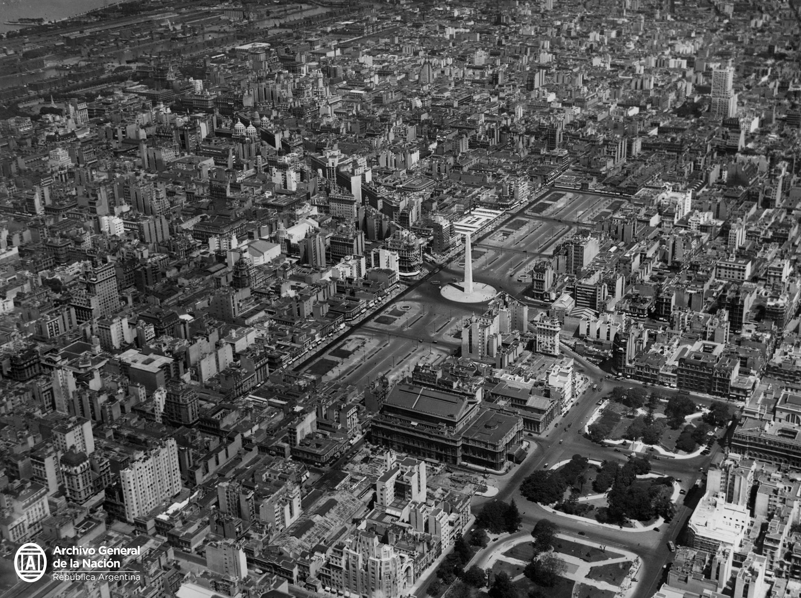


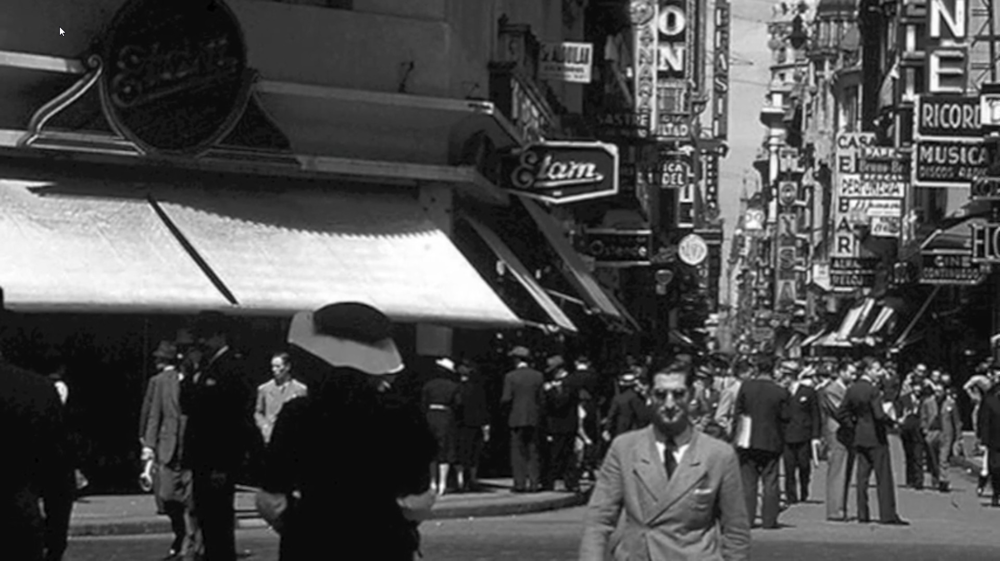
Montoj kaj provoj
Historia ekspedicio sur Aconcagua (1944)
Supreniro sur la plej altan pinton de Sudameriko (alta je 6 961 metroj) kaj batalo kontraŭ perforta monta ŝtormo.
Supreniro sen antaŭa sperto
En 1944 Sekelj aliĝis al ekspedicio sub gvido de la svisa alpinisto Georg Link. Kvankam li antaŭe ne havis pli grandan alpinisman sperton, la 13-an de februaro 1944 li kune kun la aŭstro Zechner kaj la italo Bertone atingis la pinton de la plej alta monto de Sudameriko.
Tragedio kaj savoperacio
La ekspedicion trafis perforta neĝoŝtormo, en kiu mortis kvar el ses partoprenantoj. Dek unu monatojn poste Sekelj, laŭ iniciato de la argentina armeo, partoprenis duan ekspedicion, dum kiu estis trovitaj la kadavroj de la mortintaj grimpuloj.
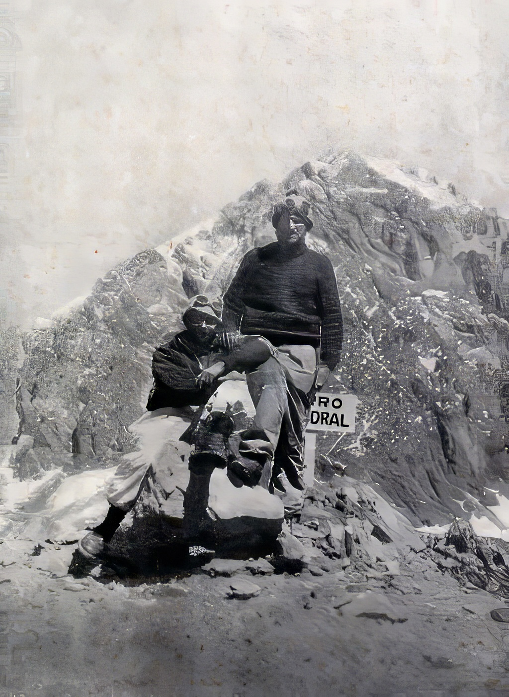
Bildo ne troviĝas
Kontrolu, ĉu ekzistas dosiero Sekelj/Sekelj_z_alpinistom_Zechnerjem.jpg rilate al tiu ĉi HTML-dosiero.
Sekelj kun alpinisto Zechner kun Aconcagua en la fono
Literatura debuto
La libro Ŝtormo super Aconcagua
La libro Ŝtormo super Aconcagua (en la hispana Tempestad sobre el Aconcagua estas la unua libro de Sekelj, en kiu li priskribis la eventojn de la Andoj-ekspedicio.
De monta dramo al libro
La senpera sperto de danĝero, malvarmo kaj perdo en altmontaro kreskis en kortuŝan rakonton pri persistemo kaj alfrontado de naturaj fortoj.
Slovena eldono kaj signifo
En la slovena ĝi aperis ĉe Mladinska knjiga en 1958 kaj estas rigardata kiel klasikaĵo de montara kaj vojaĝa literaturo.
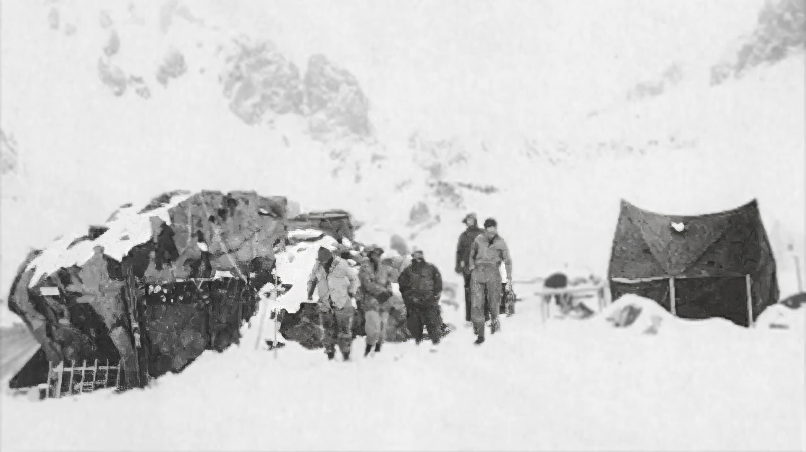

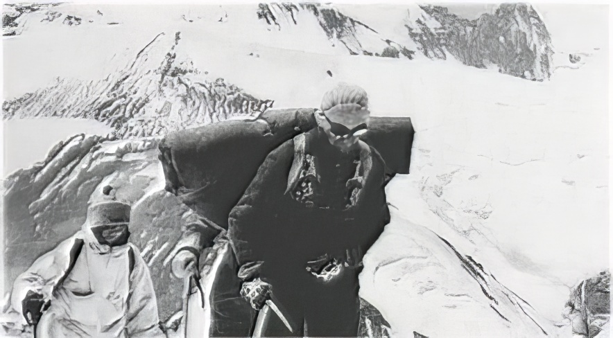
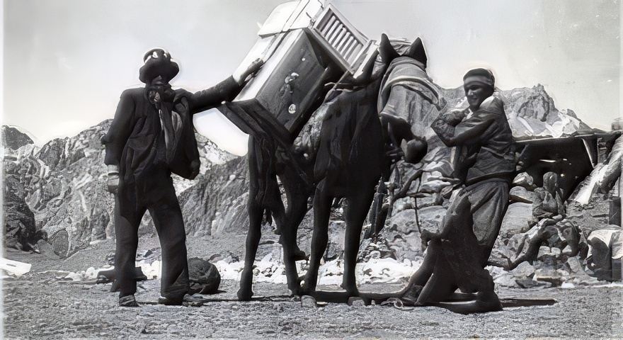
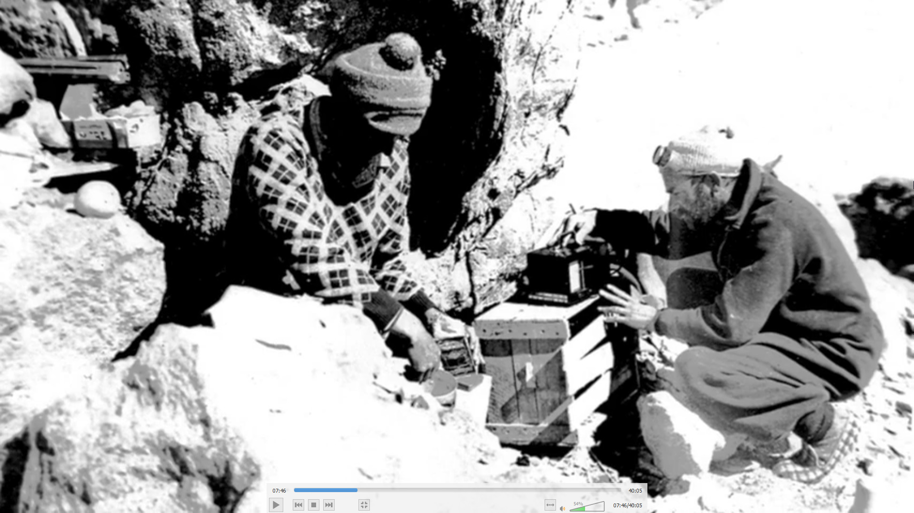

Ekspedicioj en Suda kaj Meza Ameriko
Kie li estis en la jaroj 1939–1954
Post la foriro al Sudameriko li trairis multajn regionojn kaj renkontis diversajn popolojn.
1939–1945 · Argentino kaj Aconcagua
Loĝado en Argentino kaj supreniro sur Aconcagua kaj Andoj-ekspedicioj.
1946–1947 · Mato Grosso
Esplorado de la brazila regiono Mato Grosso.
1948–1949 · Bolivio kaj la popolo Ŝivaroj
Vojaĝoj tra Bolivio kaj renkonto kun la popolo Ŝivaroj.
1949–1951 kaj 1951–1954 · Venezuelo kaj Meza Ameriko
En 1949–1951 en Venezuelo, poste en 1951–1954 ankoraŭ tra Meza Ameriko.
Sudameriko · 1939–1954
Tibor Sekelj inter la tribaj popoloj
Reveno kaj eĥo
1954: reveno al Jugoslavio kaj Beogrado
En 1954, reveninte al Jugoslavio, li ekloĝis en Beogrado, kie lin varme akceptis kaj la registaro kaj la publiko pro liaj interesaj travivaĵoj kaj homamaj mesaĝoj.
Gazetaj artikoloj
Multaj el liaj artikoloj aperis en gazetoj.
Libroj en pluraj lingvoj
Pluraj liaj libroj estis tradukitaj en la serban, slovenan, hungaran, albanan kaj la internacian lingvon Esperanto.
1956–1957 · Azio
Barato, Ĉinio kaj Nepalo
En 1956 li per aŭto ekveturis al la konferenco de la Organizaĵo de Unuiĝintaj Nacioj pri Edukado, Scienco kaj Kulturo en Nov-Delhio kiel observanto de la Universala Esperanto-Asocio; post paneo de la aŭto en Teherano li daŭrigis la vojon per aŭtobuso kaj trajno.
Renkontoj kaj tradukado
Li parolis kun Nehruo kaj Indira Gandhi, amikiĝis kun doktoro Radhakrishna kaj en la jugoslavia ambasadejo helpis kiel tradukisto al Ljubomir Vukotić (prezidanto de la Monda Federacio de Surduloj) dum la fondo de azia oficejo kun barataj kaj ĉinaj reprezentantoj.
Ĉinio kaj Nepalo (1957)
En januaro 1957 li akompanis Vukotić al Ĉinio (tiam neatingebla por turistoj), poste restis ses monatojn en Nepalo. Reĝo Mahendra dankis lin pro la fondo de la unua popola universitato kaj la komenco de instruado de Esperanto.
1957–1959 · Libro kaj Barato
Nepalo malfermas la pordon kaj vojaĝo tra Barato
La libron Nepalo malfermas la pordon (1959) li originale verkis en Esperanto dum restado en Madraso en suda Barato, kie li kombinis verkadon kun studado de joga filozofio.
Tradukoj kaj eĥo
La libro estis tradukita en multajn lingvojn, interalie en la anglan, serban kaj slovenan.
De temploj al kaverno kun jogoj
Post la verkado de la libro li denove vizitis Baraton – piede kaj parte per aŭtobuso de loko al loko kaj de templo al templo – kaj tri monatojn pasigis kun aliaj jogoj en kaverno.
Azio · 1958–1960 · Barato, Japanio, Srilanko
Vojaĝo tra Barato kaj renkonto kun Vinoba Bhave
Dum sia restado en Barato Tibor Sekelj detale konatiĝis kun la barata kulturo, filozofio kaj sociaj movadoj de tiu tempo.
Aparte grava estis lia renkonto kun Vinoba Bhave, spirita posteulo de Gandhi kaj gvidanto de la movado Bhoodan (donaco de tero al malriĉaj kamparanoj).
En unu sola monato Tibor instruis al li Esperanton, kio bele montris, kiom rapide eblas interkompreniĝi trans kulturaj kaj lingvaj limoj.
1961–1963 · Afriko
Maroko kaj “Karavano de Amikeco”
En 1961, invitite de marokaj esperantistoj, li vizitis Marokon kaj aliĝis al tuarega karavano en Saharo, intertempe estante en Beogrado.
Karavano de Amikeco (marto 1962 – unu jaro)
Ok homoj el kvar landoj en du terenaj aŭtoj trairis Egiption, Sudanon, Etiopion, Somalion, Kenjon kaj Tanzanion (dua planita karavano ne realiĝis).
Kilimanĝaro kaj Ĝambo rafiki
La celo de la vojaĝo estis rektaj homaj kontaktoj; li supreniris Kilimanĝaron kaj pri la vojaĝo verkis en Esperanto Ĝambo rafiki, kiu aperis unue en slovena traduko.
1965–1966 · Siberio, Mongolio kaj Eŭropo
De Tokio kaj Mongolio ĝis Eŭropo
En 1965 li vojaĝis al la Universala Kongreso de Esperanto en Tokio tra Moskvo, Irkutsk kaj Ĥabarovsk, per trajno ĝis Nahodka kaj per ŝipo ĝis Jokohamo.
Tri monatoj en Mongolio
Post monato en Japanio li survoje reen tra Siberio neplanite haltis tri monatojn en Mongolio, kio tiutempe, pro vizoj kaj permesoj, estis aparte malfacila.
Tra Eŭropo
En la sekvaj jaroj li vizitis preskaŭ ĉiujn eŭropajn landojn krom Albanio kaj Islando, kun speciala eĥo en Hispanio kaj la skandinavaj landoj.
1970 · Oceanio
Aŭstralio, Nov-Zelando kaj Nov-Gvineo
En 1970 li flugis al Aŭstralio, Nov-Zelando kaj Nov-Gvineo, kie li restis ses monatojn, supreniris la monton Kosciuszko kaj en Nov-Gvineo renkontis popolojn kun malmultaj kontaktoj kun la ekstera mondo.
Talentoj survoje kaj pli ol 20 lingvoj
Li sciis savi sin el multaj danĝeraj situacioj, alĝustiĝi al diversaj kutimoj kaj moroj (ankaŭ nutraj) kaj komprenigi sin en plej diversaj lingvoj – li regis pli ol dudek.
Oceanio · 1970
Papuo-Nov-Gvineo
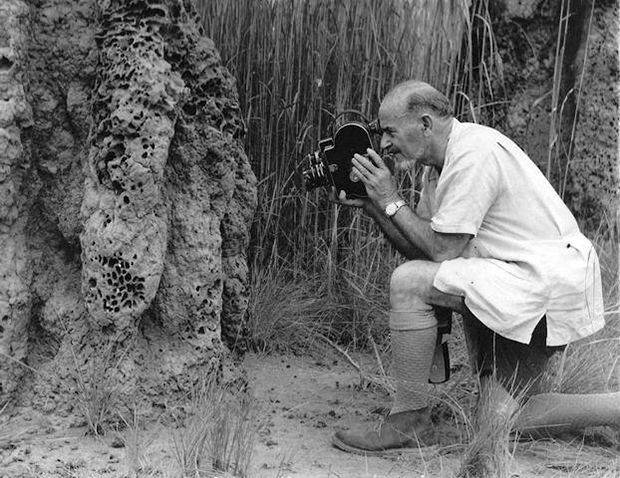
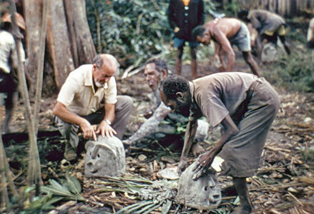
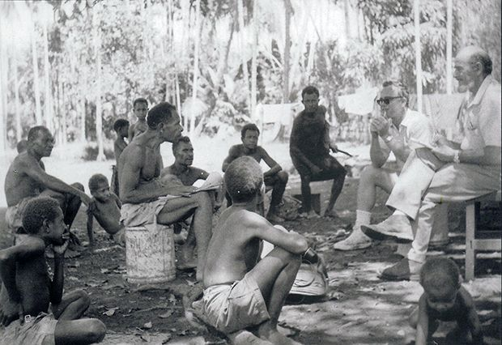
1972–1980 · Internaciaj renkontiĝoj kaj ekspedicioj
De Ĉikago kaj Leningrado ĝis Ekvadoro
En la sepdekaj jaroj li ofte ligis la vojaĝojn kun internaciaj kongresoj de etnologoj kaj kulturaj eventoj.
1972 · Nordameriko
Okaze de la internacia kongreso de etnologoj en Ĉikago li vizitis orientajn regionojn de Kanado kaj Usono.
1977 kaj 1978 · Meza Azio, Afriko kaj Ekvadoro
En 1977, okaze de evento en Leningrado, li vojaĝis al Uzbekio kaj Meza Azio kaj ĉeestis la festivalon de nigraj kaj afrikaj kulturoj en Lagoso, Niĝerio; en 1978 li denove vizitis Sudamerikon kaj unuafoje estis en Ekvadoro kaj sur la Galapagaj Insuloj.
Muzeaj kolektoj
Vojaĝanto, kiu kolektis ankaŭ objektojn
Dum la vojaĝo tra Aŭstralio kaj Papuo-Nov-Gvineo li kolektis ampleksan kolekton de objektoj, kiuj hodiaŭ troviĝas en muzeoj en Senta, Subotico kaj Zagrebo.
Kial tio gravas?
Liaj vojaĝoj lasis ne nur librojn kaj fotojn. Parto de la materiala kulturo, kun kiu li renkontiĝis, fariĝis parto de muzeaj kolektoj kaj hodiaŭ estas atingebla por studado.
La Etnografia Muzeo en Zagrebo en 2022 preparis ekspozicion “Tibor Sekelj u Okeaniji” (Tibor Sekelj en Oceanio).
Muzeaj kolektoj
Objektoj el la kolektoj
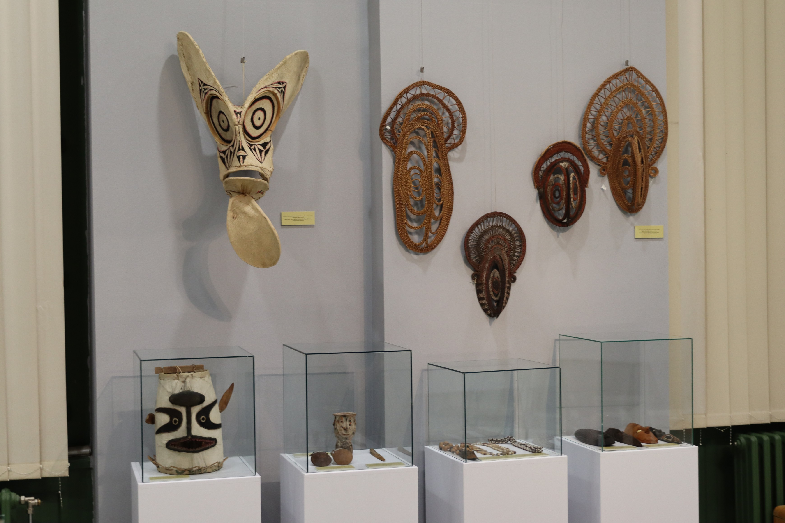
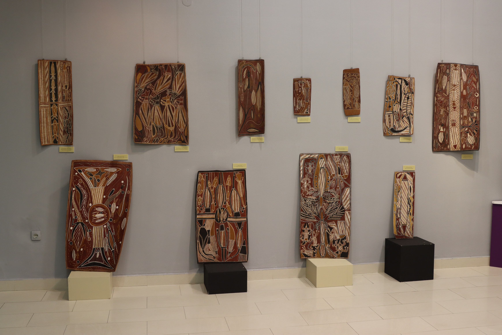
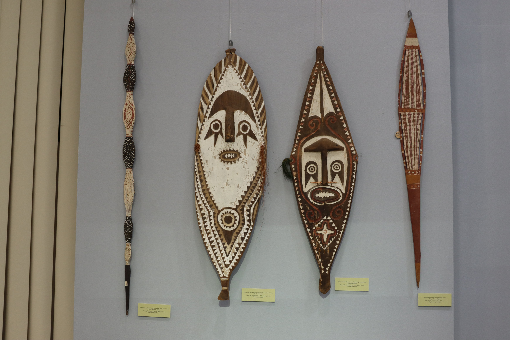
Esperanto
Lingvo kiel ponto inter homoj
Esperanton li lernis en 1930 en Zagrebo. En ĝi li vidis praktikan rimedon por komunikado inter homoj de malsamaj lingvoj kaj kulturoj.
Aŭtoro en Esperanto
Grava parto de lia literatura verkaro naskiĝis rekte en Esperanto.
Internacia movado
Li estis aktiva en la monda esperanta movado, prelegis, verkis kaj instigis internaciajn renkontiĝojn.
Lingva scivolemo
De lokaj parolmanieroj al internacia lingvo
Sekelj ne vidis Esperanton kiel anstataŭaĵon de gepatraj kaj lokaj lingvoj, sed kiel komunan interan ligilon ĉe kontakto de malsamaj mondoj.
Praktika uzo
Ĝi ebligis pli rapidan kontakton kun interparolantoj tra la mondo sen ĉiam meti inter ilin tradukadon tra grandaj lingvoj.
Literatura esprimo
En Esperanto li verkis vojaĝlibrojn, prozon kaj kontribuojn por internaciaj revuoj.
Memoro kaj komunumo
Lia verko ankoraŭ hodiaŭ ligas esperantajn societojn, esploristojn kaj leganton.
Verkisto
Vojaĝoj, kiuj fariĝis libroj

Tempestad sobre el Aconcagua
Ŝtormo super Aconcagua (Bonaero)
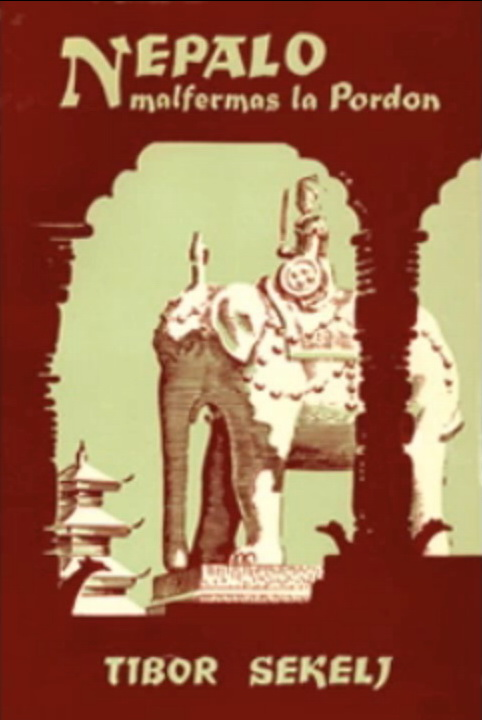
Nepalo malfermas la Pordon
Nepalo malfermas la pordon (en Esperanto)
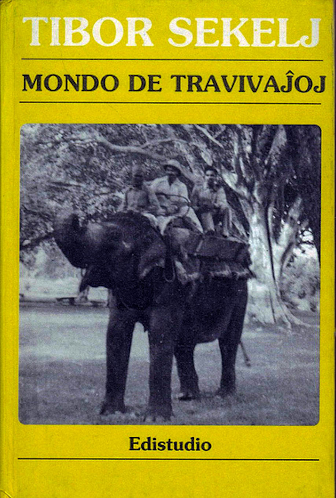
Mondo de travivajoj
Mondo de travivaĵoj (Edistudio)
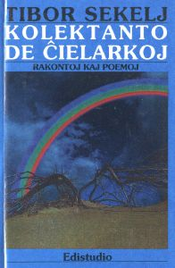
Kolektanto de ĉielarkoj
Kolektanto de ĉielarkoj – rakontoj kaj poemoj

Kumeŭaŭa, la filo de la ĝangalo
Rakonto el la amazonia praarbaro
Liaj verkoj aperis en pluraj lingvoj – interalie en la hispana, Esperanto kaj diversaj lingvoj de la jugoslavia regiono.
Junulara aventura romano · 1979
Kumeŭaŭa, la filo de la ĝangalo
Originale en Esperanto (Kumeŭaŭa, la filo de la ĝangalo, 1979): post ŝipdetruiĝo sur la rivero Araguaia la vojaĝantoj konatiĝas kun la inĝenia brazila knabo Kumeŭaŭa, kiu konas la praarbaron kiel sian hejmon.
Ĉefa mesaĝo de la libro
Scio ne dependas de lerneja edukiĝo, homo devas respekti kaj kompreni la naturon, kaj kulturoj, en amikeco trans lingvaj kaj kulturaj limoj, riĉiĝas kaj lernas unu de la alia.
Internacia sukceso kaj esenca penso
Tradukita en multajn lingvojn (en Japanio en 1987 inter la plej bonaj junularaj verkoj). Kumeŭaŭa kiel infano de la praarbaro per sia scio pri la naturo superas plenkreskulojn el la “civilizita” socio – ĉiu homo havas valoron sendepende de kulturo.
Kumeŭaŭa · 1 / 2
Rakonto kaj renkonto en la praarbaro
La rakonto okazas en la amazonia praarbaro en Brazilo. Vojaĝanta grupo dum navigado sur la rivero Araguaia suferas ŝipdetruiĝon, aŭ akcidenton kun boato. Tiam ili konatiĝas kun juna indiano Kumeŭaŭa, kiu vivas en la praarbaro kaj konas ĝin kiel sian hejmon.
Kumeŭaŭa estas komence stranga knabo por la alvenintoj, sed li rapide montras, ke li estas eksterordinare lerta, inĝenia kaj saĝa. Dum la vojaĝantoj sentas sin necertaj en nekonata medio, por li la praarbaro estas tute hejma mondo. Li konas ĝiajn vojojn, plantojn, bestojn kaj danĝerojn.
La knabo iom post iom malkaŝas al la vojaĝantoj la sekretojn de la praarbaro. Li montras al ili, kiel orientiĝi en la naturo, kiel rekoni danĝerojn, kiel uzi naturajn rimedojn kaj kiel travivi en medio, kie oni ne povas kalkuli je la komforto de moderna civilizo.
Kumeŭaŭa · 2 / 2
Aventuroj kaj ĉefa mesaĝo de la libro
Tra la aventuroj ili ekkomprenas, ke la praarbaro ne estas nur bela kaj riĉa mondo, sed ankaŭ neantaŭvidebla kaj danĝera medio. Kumeŭaŭa montriĝas elstara konanto de la naturo, kiu per sia scio ofte helpas ankaŭ plenkreskulojn.
Samtempe inter li kaj la vojaĝantoj evoluas amika rilato. Ilia renkonto fariĝas ankaŭ okazo por koni alian vivmanieron, kulturon kaj valorojn de la indiĝenaj loĝantoj.
Ĉefa mesaĝo de la libro
La libro superas la kadron de ordinara aventura romano. Per ĝi Sekelj atentigas pri kelkaj gravaj ekkonoj:
- Scio ne dependas de lerneja edukiĝo. Kumeŭaŭa havas scion, kiun la plenkreskaj vizitantoj de la praarbaro ne havas.
- Homo devas respekti la naturon. Por travivi necesas kompreni la naturon, ne batali kontraŭ ĝi.
- Malsamaj kulturoj povas multon lerni unu de la alia. Ne nepre la vivmaniero de la civilizita homo estas la sola aŭ plej bona.
- Amikeco superas kulturajn kaj lingvajn diferencojn.
Muzea fakulo
De esploristo al direktoro de muzeo
En 1972 li fariĝis direktoro de la Urba Muzeo en Subotico. Interesis lin, kiel muzeoj prezentu malsamajn kulturojn kaj kiel ili povas kontribui al pli bona interkompreno inter homoj.
1976
Magistra verko pri la estonteco de etnografiaj muzeoj
Lia verko titoliĝis Etnografski muzeji za budućnost – muzeoj ne estu nur deponejoj de objektoj, sed spaco de kompreno de kulturoj.
Lia rigardo al la mondo
“Fakte la diferencoj inter ni estas nur surfacaj.”Pensoj de Tibor Sekelj, resumitaj laŭ lia skribaĵo en la portalo Putnici
La vojaĝoj por li ne estis nur movado de loko al loko. Li volis kompreni homojn – iliajn kutimojn, pensmanieron kaj vivmanieron.
Konkludo
Kial ni ankoraŭ memoras lin?
Ĉar li kunigis aventuron, esploradon, verkadon, intereson pri aliaj kulturoj kaj konvikton, ke homoj povas interkomprenigi sin trans lingvaj limoj.
Esploristo
Li serĉis la nekonaton kaj direktiĝis for de la kutimaj vojoj.
Verkisto
La travivaĵojn li transformis en librojn, kiuj atingis leganton en multaj lingvoj.
Esperantisto
Li kredis je internacia komunikado kaj amikeco.
Muzea fakulo
Li zorgis, ke objektoj kaj rakontoj de malsamaj kulturoj restu konservitaj.
Tibor Sekelj · 14-a de februaro 1912 – 20-a de septembro 1988 (laŭ fontoj la dato de morto ie malsamas).
Videoj por la prelego
Lasu paroli ankaŭ la bildon
Mallongaj eltiraĵoj por la prelego.
Kreita per Gemini, kontrolita kaj kompletigita per Claude Sonnet 5.5